Unofficial study solution; not an official GTU answer key. Answers have not been independently verified. English text reflows; source equations, diagrams and Gujarati retain their original appearance. Use Enlarge image to inspect them.
આ બિનસત્તાવાર અભ્યાસ ઉકેલ છે, સત્તાવાર GTU જવાબવહી નથી. PDF માંથી ગુજરાતી લખાણ સાચું નીકળતું નથી, તેથી દરેક જવાબ મૂળ ચિત્રરૂપે જાળવ્યો છે. વાંચવા માટે ચિત્ર મોટું કરો. મૂળ પ્રશ્ન અને પરીક્ષાના વિકલ્પોની સૂચનાઓ અનુસરો.
Coverage: all 28 printed parts, including every OR alternative, are answered in English and easy Gujarati. The paper is 70 marks; alternatives are not additional marks.
Question wording: the supplied English questions are reproduced with line breaks normalised. The Gujarati question meaning is a study aid, not a verbatim official translation; the paper states that English is authentic.
Diagrams and safety: sketches are schematic and not working drawings. Apply current standards and professional advice for materials, detailing and safety.
Status: study support based on the supplied paper, not an official GTU answer key. Original question papers remain unchanged in separate PDFs.
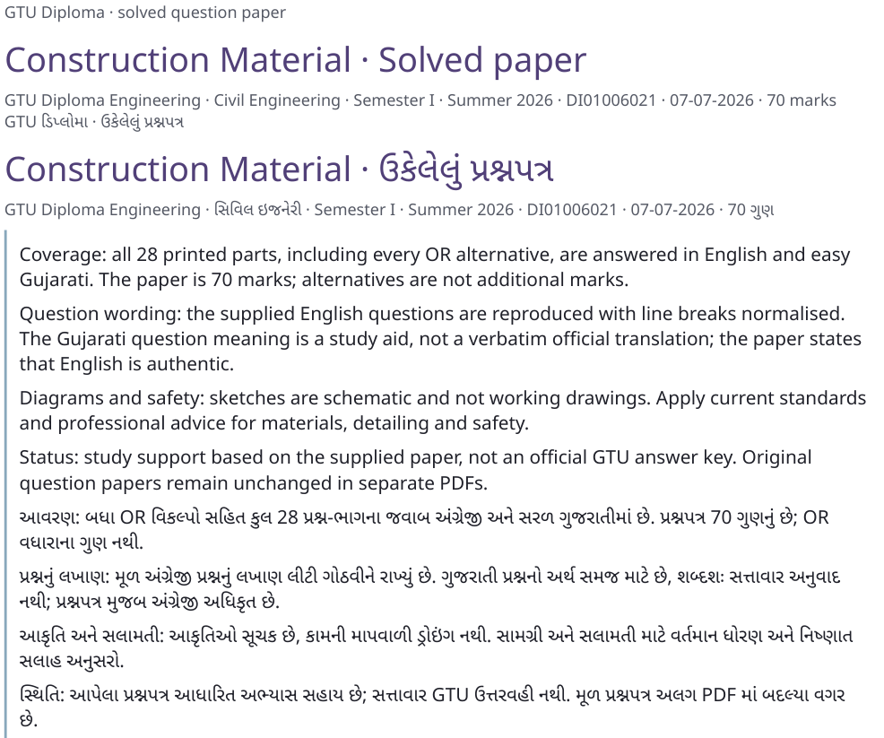
Question 1
Q1 · Sustainable materials, lime and seasoning
Q.1 (a) · Prepare a list of eco-friendly construction materials. · 3 marks
Examples of potentially eco-friendly construction materials:
• Responsibly sourced bamboo or certified timber.
• Reused bricks and recycled concrete aggregate.
• Fly-ash or slag blended cement and fly-ash bricks, where quality is verified.
• Locally sourced stone and earth blocks; agricultural-residue boards where suitable.
A material is not automatically green: compare its whole life, transport, durability and safe use.
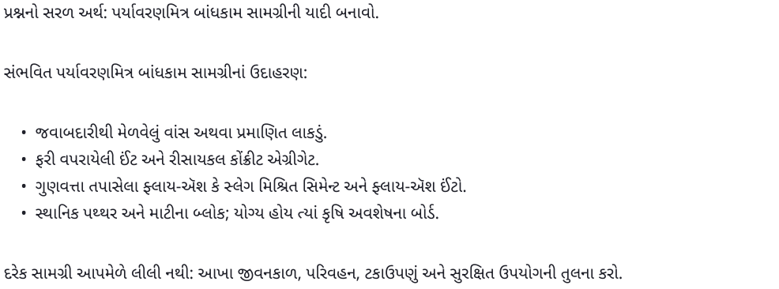
Q.1 (b) · Enlist and explain recycled construction materials. · 4 marks
Recycled construction materials are recovered waste that is processed for a new construction use. Examples:
• Recycled concrete aggregate: crushed, cleaned demolished concrete used in suitable sub-base or designed concrete.
• Recycled steel: recovered reinforcement or sections melted and remade into new steel products.
• Recycled wood: suitable wood waste is chipped and processed into particleboard or fibreboard.
• Recycled glass or plastic: processed into suitable paving, panels or other products according to specifications.
Reclaimed bricks or timber used again with little processing are examples of reuse, which is related to but distinct from recycling. Sort and test contaminants, strength and durability before use; suitability is project-specific.
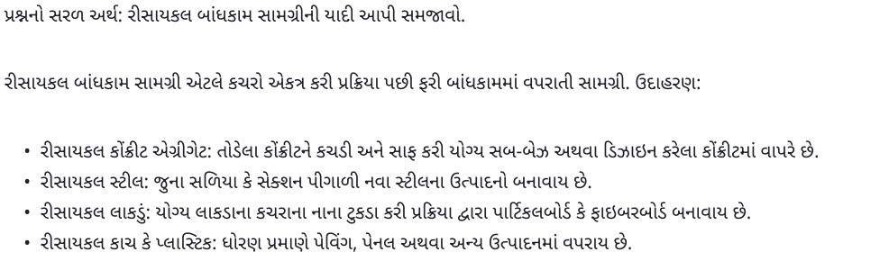
Q.1 (c) · Explain slaking and setting of lime. · 7 marks
1. Slaking of quicklime
Quicklime is calcium oxide (CaO). When water is added under controlled conditions, it reacts to form calcium hydroxide, called slaked or hydrated lime; the reaction is strongly exothermic:
CaO + H2O → Ca(OH)2 + heat
1. Use clean, suitable water and allow the reaction to complete; the amount of water and equipment depend on whether powder, putty or slurry is required.
2. Heat and expansion break down lumps. Proper slaking and maturation as specified reduce the risk of later unslaked particles expanding in the work.
3. Control splashes, dust and heat. Lime is caustic: use appropriate gloves, eye protection and the specified safe handling procedure.
2. Setting and hardening after application
Setting is the development of rigidity in the placed lime paste or mortar; it is not the same operation as slaking.
• Air or non-hydraulic lime: after initial loss of excess water, calcium hydroxide absorbs carbon dioxide from air and slowly forms calcium carbonate: Ca(OH)2 + CO2 → CaCO3 + H2O. Carbonation needs access to air and suitable moisture.
• Hydraulic lime: hydraulic compounds react with water and form binding products, so it can develop an initial set in damp conditions or under water where the product is suitable. Carbonation may occur later.
• Care: use the specified mix and curing procedure; excessive drying, frost and inappropriate wetting can harm the work.
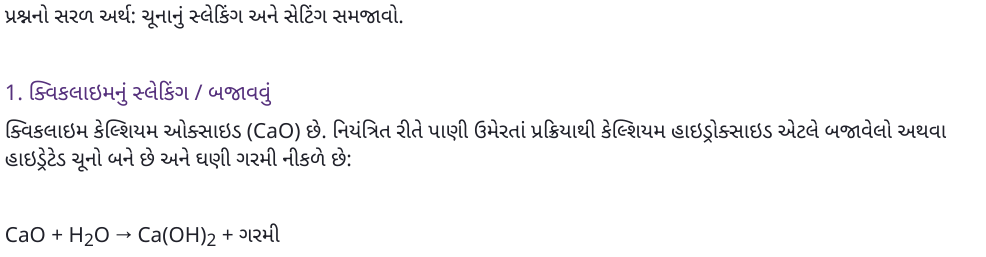
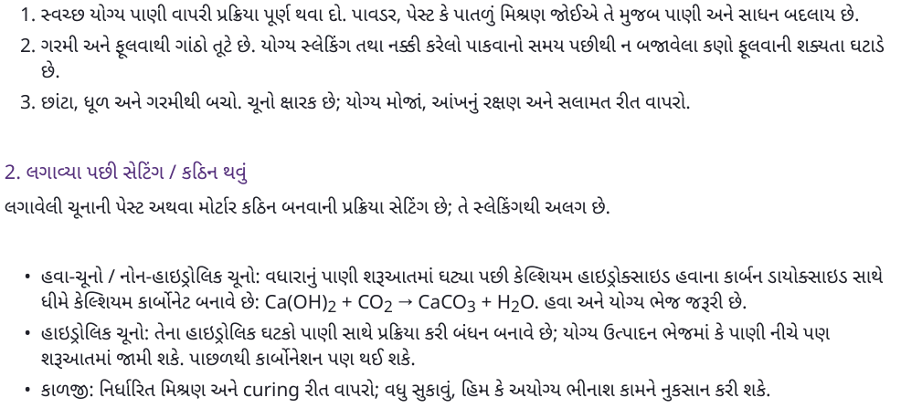
Q.1 (c) · Explain seasoning of Timber. · OR · 7 marks
Definition: seasoning is controlled removal of excess moisture from freshly cut timber to a moisture content suitable for its intended service, not removal of all water.
Purposes and advantages
• Reduce shrinkage and swelling after installation, improving dimensional stability.
• Reduce weight and make transport and handling easier.
• Generally improve strength and stiffness compared with green timber, for the same species and conditions.
• Allow better machining, joining, painting and adhesion of finishes.
• Lower moisture reduces the conditions favourable to fungal decay; it is not permanent protection against water or termites.
Methods
1. Natural air seasoning: stack boards above the ground under a roof, with aligned spacers and air passages. Dry slowly until suitable moisture is reached; weather limits the achievable dryness.
2. Artificial / kiln seasoning: circulate air in a kiln and control temperature, humidity and air speed. Monitor moisture and use a suitable schedule to reduce checks and warping.
3. Store the dried timber protected from rain and rewetting before use.

Question 2
Q2 · Uses, trees, timber defects and aggregates
Q.2 (a) · Explain Construction material in Transportation Engineering. · 3 marks
Transportation works such as roads, bridges and railways use:
• Aggregates and soil: compacted subgrade, sub-base and road-base layers.
• Bitumen and concrete: bituminous flexible pavements and cement-concrete rigid pavements respectively.
• Steel and reinforced concrete: bridges, railway rails, structures and suitable sleepers; geosynthetics may separate or reinforce layers.
Choose materials for traffic load, drainage and durability.
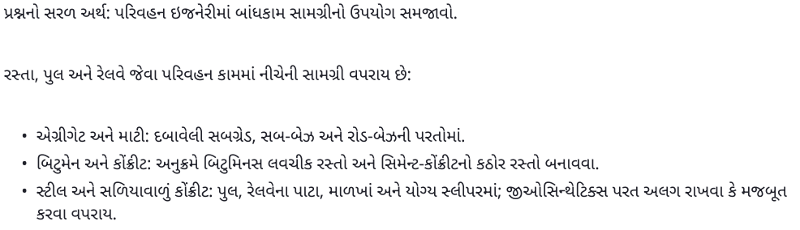
Q.2 (b) · Draw a cross section of exogenous tree and explain its various parts. · 4 marks
An exogenous tree grows mainly outward by the formation of new layers. Its transverse section is shown below:
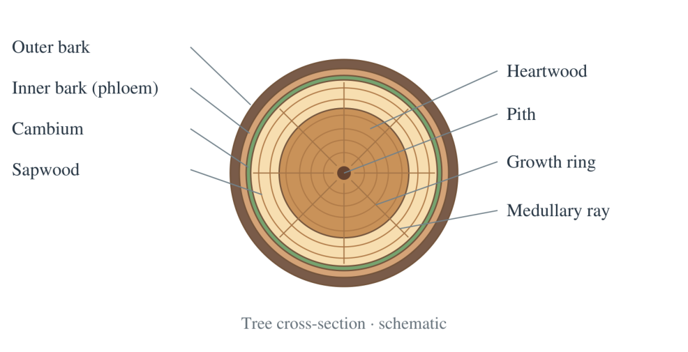
Schematic cross-section; rings and radial rays are exaggerated for clarity.
• Pith: soft central core of the young stem.
• Heartwood: older inner wood; usually darker, comparatively durable and chiefly provides structural support.
• Sapwood: younger outer wood that conducts water and minerals from roots; it is generally more susceptible to decay than heartwood.
• Cambium: thin living growth layer between wood and bark that produces new wood inward and inner bark outward.
• Inner bark (phloem): carries prepared food through the living tree. Outer bark: protects the stem from the environment.
• Growth rings: visible layers formed by seasonal growth; in many climates a ring can represent a year, but growth conditions vary.
• Medullary rays: radial tissues used for lateral transport and storage.
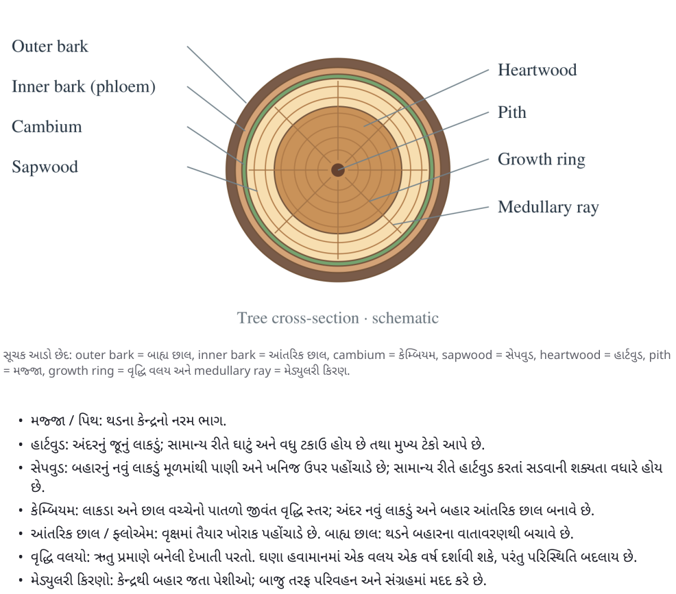
Q.2 (c) · Explain defects in timber with neat sketches. · 7 marks
Timber defects are faults that may reduce appearance, strength, durability or ease of use. They can be classified by origin:
• Growth / standing tree: knots, shakes and irregular grain.
• Seasoning: checks, splits and warping caused or aggravated by uneven drying.
• Conversion / handling: torn grain or saw marks from poor sawing or handling.
• Biological: fungal decay and damage by insects or termites.
Any three with sketches
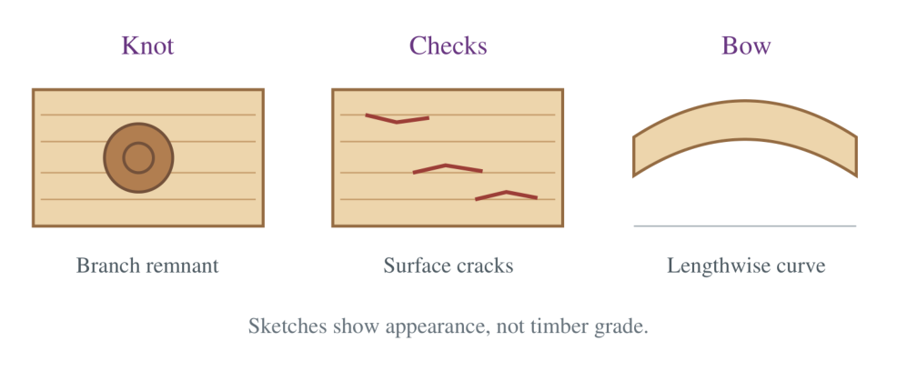
Typical appearances of knot, checks and bow. Sketches are not to scale.
1. Knot: embedded base of a branch interrupts the straight grain; a large or loose knot may weaken timber and spoil the finish.
2. Check: a surface crack along the grain, commonly caused by the outer surface drying and shrinking faster than the inside. Deep checks can admit moisture.
3. Bow: lengthwise curvature of a board, often due to uneven shrinkage; it makes alignment and joining difficult.
Select sound timber, stack with aligned spacers, dry at a controlled rate, keep it dry in use and protect it as appropriate.
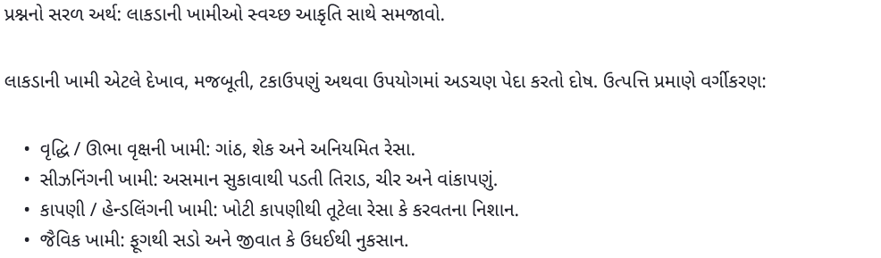

Q.2 (a) · Explain Construction material us in Irrigation Engineering. · OR · 3 marks
Irrigation works such as canals, dams and weirs need materials suited to water exposure:
• Concrete and masonry: dam bodies, canal linings, spillways and retaining structures where designed.
• Stone and soil: rock protection, pitching, embankments and earth dams after suitable grading and compaction.
• Steel and polymers: gates, pipes and reinforcement; geomembranes may form a water barrier where specified.
Water tightness, erosion resistance, durability and protection from corrosion depend on design and site conditions.
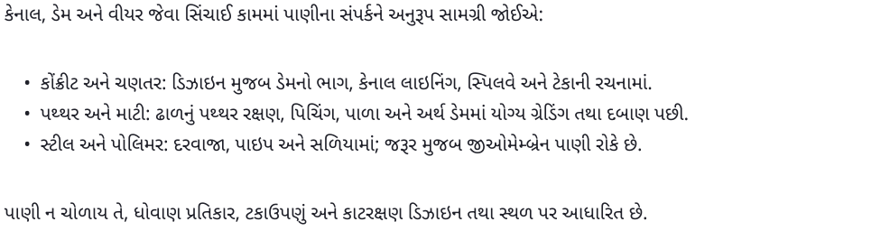
Q.2 (b) · Enlist requirements of good building stones. · OR · 4 marks
A good building stone should have the following properties, suited to its intended use:
• Strength: sufficient resistance to the expected compressive load.
• Durability: resist weather, wetting, temperature change and the site environment.
• Structure: sound and reasonably uniform, without cracks, soft veins or cavities.
• Low absorption: relatively dense and non-porous for exposed work.
• Hardness and toughness: resist wear and impact where used in floors or roads.
• Workability and appearance: can be dressed economically and has a suitable finish and colour.
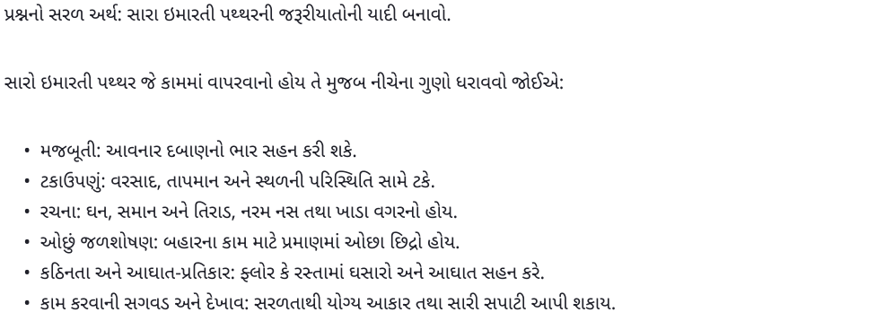
Q.2 (c) · Explain classification of aggregate based on size. · OR · 7 marks
Aggregate is a granular material used with a binder. On the basis of size it is commonly divided into fine, coarse and all-in aggregate; classification is checked by sieve analysis.
![Q.2 (c) OR: preserved source formula, table or diagram, page 11. Extracted text context (formula notation may be incomplete): Class Typical size description Examples and use Fine aggregate Predominantly passes the 4.75 mm IS sieve; grading and permitted fines are governed by the applicable specification. Natural sand or manufactured sand; fills voids in mortar and concrete. Coarse aggregate Predominantly retained on the 4.75 mm IS sieve; common nominal sizes include 10, 20 and 40 mm. Gravel or crushed stone; forms the coarse skeleton of concrete and road layers. All-in aggregate A combined mixture of fine and coarse fractions, with a specified overall grading. Used where a suitable combined aggregate is permitted.](summer-2026.assets/0019.webp)
1. Dry a representative sample and weigh it.
2. Arrange standard sieves from larger openings at the top to smaller ones below; shake the sample.
3. Weigh material retained on each sieve and calculate percentage passing. Compare the complete grading with the relevant standard and project specification.
Important: 4.75 mm is the conventional boundary, not a claim that every single grain lies on one side. Nominal size is a grading designation, not an exact size of every particle. Suitable grading reduces voids and helps workability.
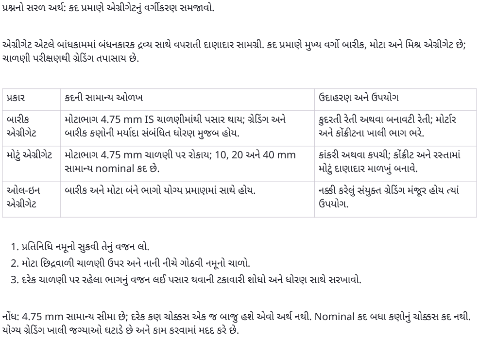
Question 3
Q3 · Bitumen, brick making and burning
Q.3 (a) · Explain cutback and emulsion. · 3 marks
Cutback bitumen: bitumen is thinned with a volatile petroleum solvent to make it easier to apply at a lower temperature. The solvent evaporates after application, leaving the binder. Solvent vapours can be flammable and polluting.
Bitumen emulsion: fine bitumen droplets are dispersed in water using an emulsifier. After application the emulsion breaks and water leaves, allowing the bitumen to form a film. It can often be applied without high heating, subject to product and weather requirements.
Uses: suitable grades are used for road prime coats, tack coats or surface treatments. Select by specification, surface condition and environmental rules.
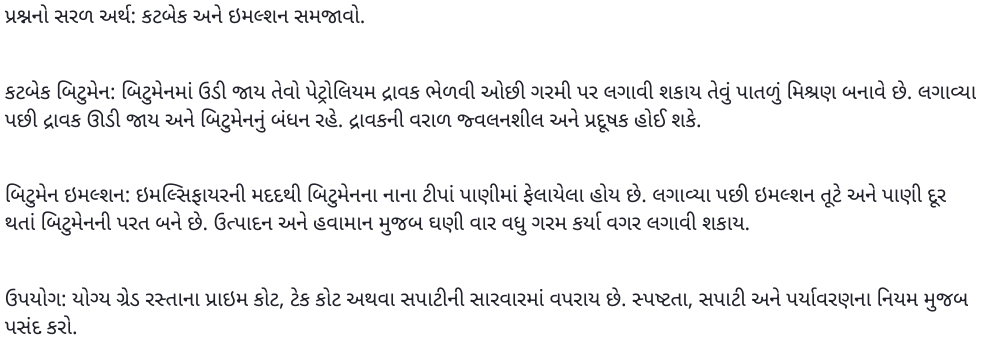
Q.3 (b) · Draw flow diagram for manufacturing process of bricks. · 4 marks
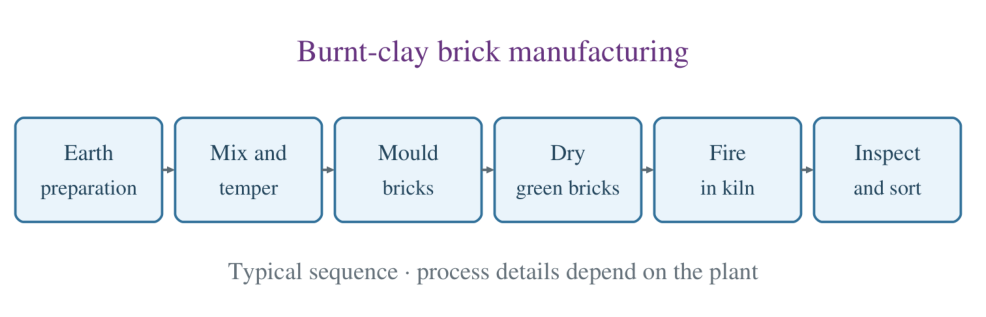
Typical flow for burnt clay bricks; individual plant steps may vary.
1. Prepare clay: remove unsuitable material, dig, weather and blend.
2. Temper with water, mould to shape and dry the green bricks.
3. Burn at a controlled temperature, cool, inspect and sort.
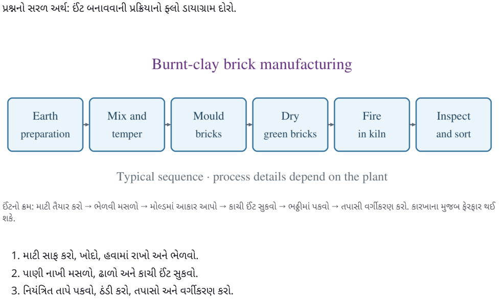
Q.3 (c) · Explain Hoffman’s Kiln with neat sketch. · 7 marks
Principle: a continuous, moving-fire kiln recovers heat. The bricks remain stationary in a ring of chambers while the firing zone progresses around the ring.
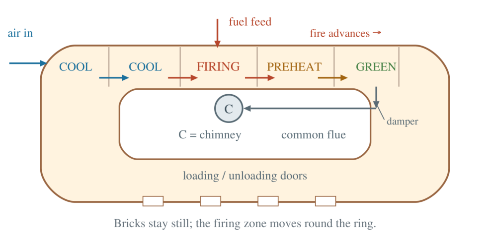
Plan is schematic: air and hot gases move through the chambers; opened dampers direct exhaust to the common flue and chimney.
1. Construction: annular chamber divided into compartments, outer loading doors, roof fuel holes and flue connections with dampers; a chimney creates draught.
2. Loading and drying: dried green bricks are stacked with passages for air; doors are closed before firing.
3. Cooling and firing: fresh air enters through already fired hot bricks, cools them and becomes hot combustion air for the firing zone. Fuel is fed through roof holes.
4. Preheating: hot combustion gases continue into unburnt bricks, heating them before being drawn through an open damper to the flue and chimney.
5. Continuous cycle: shift fuel feed and dampers in sequence so the firing zone advances; unload cooled bricks and reload those chambers.
Advantages
• Heat recovery reduces fuel use compared with a simple clamp.
• Continuous, large-scale production with better temperature control and more uniform output.
• Hot bricks can cool while other chambers fire; loading and unloading continue in separate chambers.
Actual chamber arrangements and operating directions vary; the sketch indicates the path for one operating position.
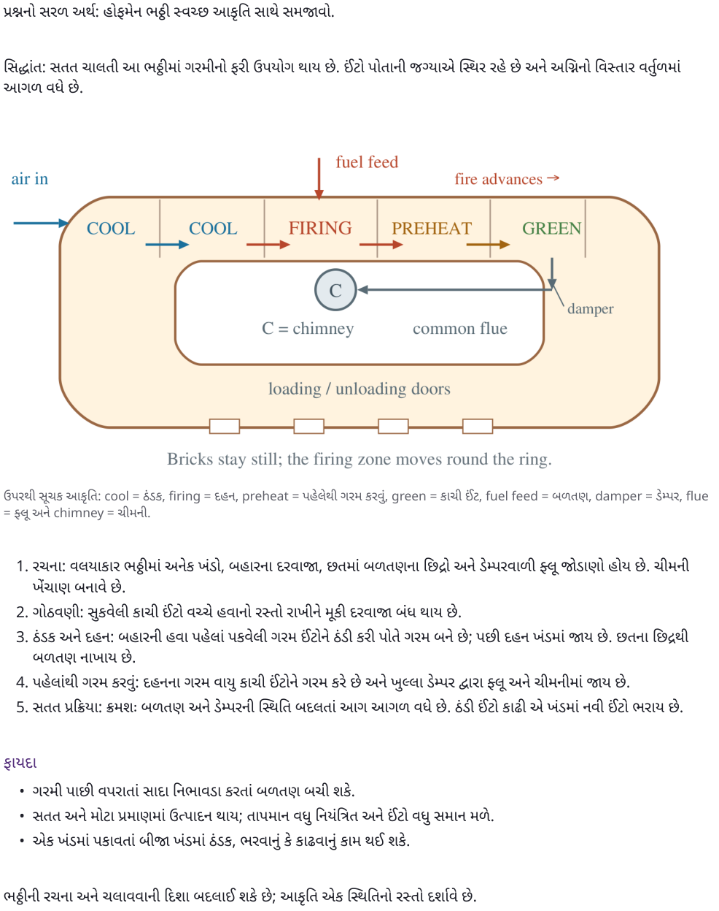
Q.3 (a) · Enlist properties of good sand. · OR · 3 marks
• Clean and free from harmful clay, silt, salts and organic matter.
• Hard, durable grains, suitably graded for the intended mortar or concrete.
• Free from excessive dust and other substances harmful to the binder.
Q.3 (b) · Write merits and demerits of aerated concrete blocks. · OR · 4 marks
Aerated concrete blocks contain many small air voids; autoclaved aerated concrete (AAC) is a common type.
Merits
• Low density reduces dead load and makes handling easier.
• Air voids give useful thermal insulation; fire performance can be good when the complete assembly is properly designed.
• Blocks are often dimensionally uniform and can be cut for services.
Demerits
• More brittle than dense blocks; edges may chip and suitable fixings are needed.
• Absorption and exposed joints need appropriate detailing and protective finish.
• Load-bearing use depends on tested block strength and structural design; cost and transport depend on location.
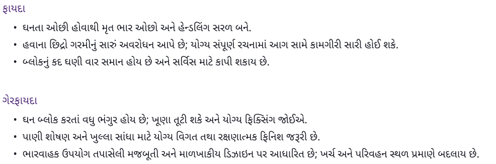
Q.3 (c) · Compare between 'Clamp Burning and Kiln Burning'. · OR · 7 marks
Both methods burn dried clay bricks, but their arrangements differ:
![Q.3 (c) OR: preserved source formula, table or diagram, page 17. Extracted text context (formula notation may be incomplete): Basis Clamp burning Kiln burning Arrangement Temporary stack of bricks and fuel, usually covered with earth or waste. Constructed chamber or structure with controlled draught. Operation Usually intermittent: load, burn, cool and dismantle. May be intermittent or continuous, depending on kiln type. Initial cost Low; suitable for smaller local works. Higher construction and equipment cost. Control Air supply and temperature are difficult to control evenly. Better regulation of air, fuel and firing temperature. Fuel / heat Heat recovery is limited; efficiency varies. Properly operated kilns, especially continuous kilns, recover more heat. Quality More variable; under- and over-burnt bricks may occur. Generally more uniform when correctly operated. Time / production Slow batch and lower capacity. Often higher output; continuous kilns reduce interruptions. Location Can be set up close to a small work site. Usually a fixed installation requiring skilled operation.](summer-2026.assets/0029.webp)
Cost, emissions and quality depend on design, fuel and operation; a kiln is not automatically efficient.
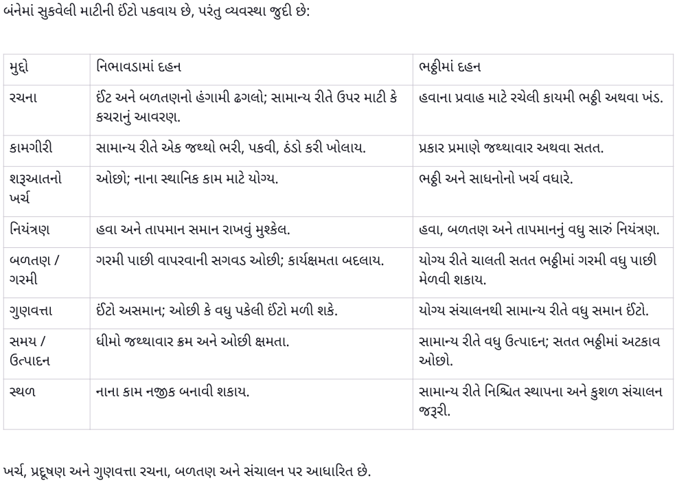
Question 4
Q4 · Bricks, termite measures, cement and metals
Q.4 (a) · Define the terms: (1) Queen closer (2) King closer (3) Bat. · 3 marks
Queen closer: a brick cut lengthwise into two equal strips, each of full length and half width; it helps maintain bond at a quoin.
King closer: a brick with a triangular corner cut away, so one end is half-width and the other end remains full-width.
Bat: a piece obtained by cutting a brick across its length; a half bat has half the length and the full width.

Plan view: the shaded piece is retained. Closer cuts help arrange the bond; drawings are schematic.
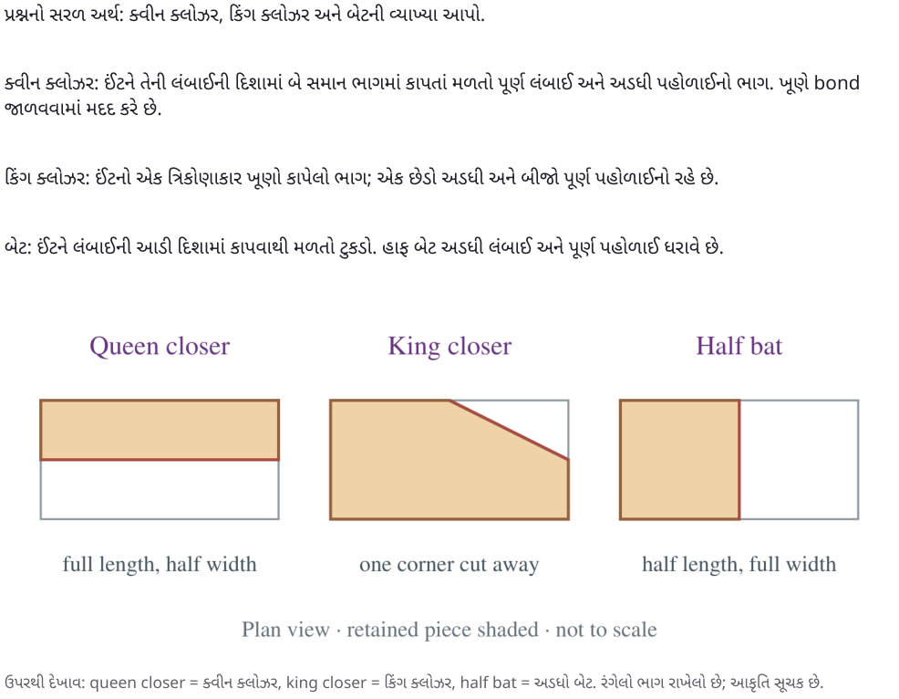
Q.4 (b) · Explain in detail: Anti termite measures. · 4 marks
Anti-termite measures combine building detailing, inspection and, where necessary, a permitted treatment:
1. Remove roots, timber scraps and other cellulose debris from the site; prevent timber from direct soil contact.
2. Provide drainage and repair leaks. Use appropriate barriers, seal service penetrations and keep inspection access.
3. Use naturally durable or properly preservative-treated timber where specified; inspect foundations and timber periodically.
4. For pre-construction or existing infestation, engage a qualified professional to assess and apply an approved physical or chemical system at the relevant soil, foundation and entry points.
Safety: follow current local law, approved product label and applicable standards. Do not choose or mix chemicals from an old textbook recipe; protect people, water sources and the environment.
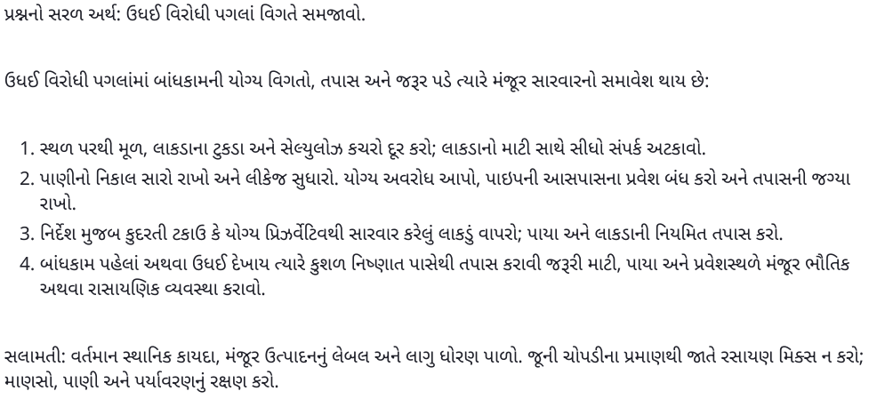
Q.4 (c) · Draw the flow diagram for manufacturing of cement by dry process. · 7 marks
The dry process uses a ground, dry raw meal rather than a wet slurry:
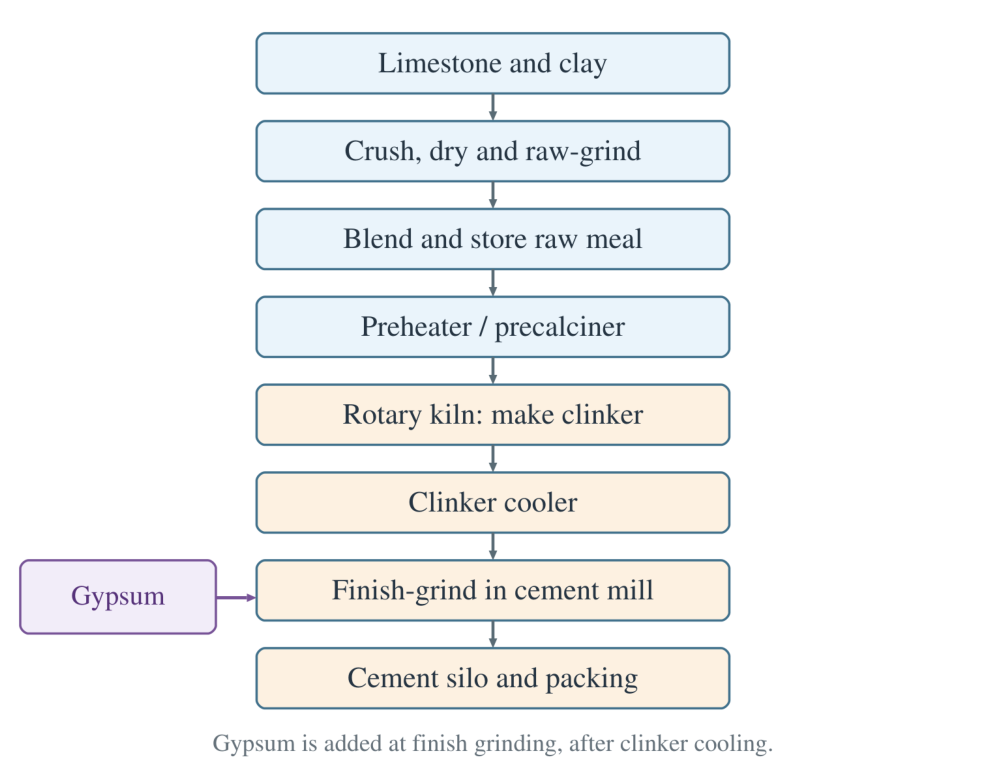
Dry-process flow: gypsum joins the cooled clinker at finish grinding, not in the kiln.
1. Quarry limestone and clay or other corrective materials; crush, dry, proportion and finely grind them.
2. Blend the raw meal and pass it through a preheater / precalciner where available; heat starts the reactions and calcination.
3. Burn in a rotary kiln to form clinker, then cool the hot clinker, recovering heat where possible.
4. Grind cooled clinker with gypsum, and other permitted constituents if specified, to make cement. Store in silos and pack or dispatch in bulk.
Gypsum helps control setting. The exact plant layout and permitted additions depend on the cement type and specification.
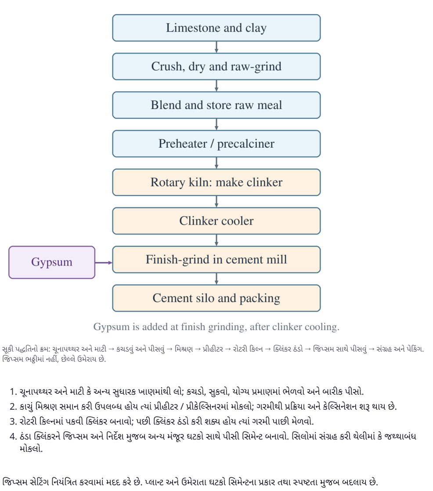
Q.4 (a) · Enlist properties of glass. · OR · 3 marks
Common properties of glass:
• Usually transparent or translucent; can transmit light and be coloured.
• Hard and smooth but brittle; ordinary glass breaks with little plastic deformation.
• Impermeable to water and resistant to many chemicals; it is not resistant to every chemical.
• Can be moulded or made into sheets and fibres; thermal and impact resistance depend on the type and treatment.
• Electrical insulator under ordinary dry conditions.
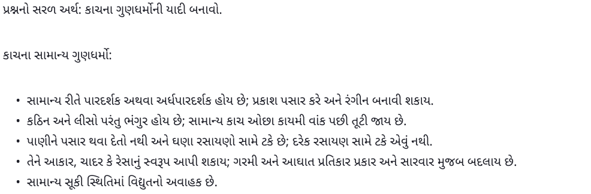
Q.4 (b) · Explain glass fibres and plastic fibres. · OR · 4 marks
Glass fibres: thin strands drawn from glass are used in insulation and fibre-reinforced composites. They offer useful tensile strength and do not rust. For cement-based products, use the specified alkali-resistant grade because ordinary glass can deteriorate in alkaline cement.
Plastic fibres: synthetic polymer fibres such as polypropylene or polyester are added to suitable concrete, plaster or composite products. Selected microfibres can help reduce plastic-shrinkage cracking; their performance depends on type, dose and mix.
Neither fibre automatically replaces designed structural reinforcement. Follow the product, fire and durability requirements.
Q.4 (c) · Explain Properties and use of Ferrous Metals. · OR · 7 marks
Ferrous metals contain iron as their principal constituent. Their properties depend on carbon content, alloying, heat treatment and manufacture.
![Q.4 (c) OR: preserved source formula, table or diagram, page 24. Extracted text context (formula notation may be incomplete): Material Typical properties Typical uses Mild / structural steel Strong, relatively ductile and weldable in suitable grades; can corrode without protection. Structural frames, plates, reinforcement and bridges. High-strength / alloy steel Higher strength or special properties from composition and processing; grade-specific welding and detailing are required. High-strength fasteners, structural members and machinery. Cast iron Good castability and generally high compressive strength; many grades are relatively brittle in tension. Manhole covers, pipes, machine bases and cast components. Wrought iron Low carbon, fibrous structure, workable and relatively ductile; now less common. Traditional gates, railings and decorative work. Stainless steel Chromium-containing alloy with improved corrosion resistance; not immune to all corrosion. Suitable fittings, railings and components in selected exposures.](summer-2026.assets/0041.webp)
General points
• Steel resists tension well and can be fabricated into many sections; use the specified grade and connections.
• Protect ordinary steel using suitable coatings, concrete cover or other designed corrosion protection.
• Properties and fire performance vary; protect and design structural members for the actual load and exposure.
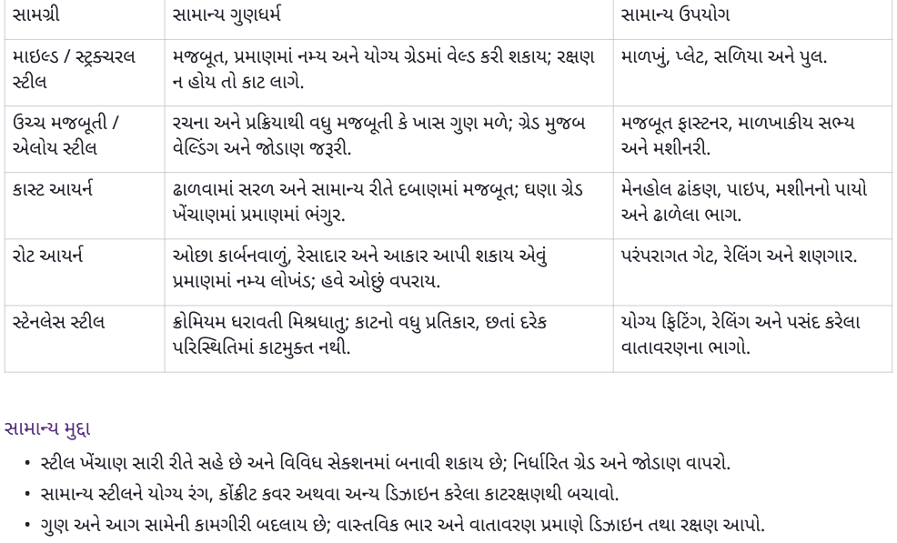
Question 5
Q5 · Finishes, insulation and waste
Q.5 (a) · Write short note on :Varnish · 3 marks
Varnish is a generally transparent protective finish made from a film-forming resin, with oil or solvent depending on the type. It dries to leave a protective film while allowing the timber grain to show.
It is used on doors, furniture and woodwork to improve appearance and resist wear or moisture according to the product. Apply to clean, dry prepared surfaces in suitable coats; outdoor use needs a weather- and UV-suitable varnish.
Q.5 (b) · Explain of good thermal insulating materials. · 4 marks
A good thermal insulating material has low thermal conductivity, suitable durability, low enough moisture uptake and adequate fire performance for the assembly. Examples include:
• Mineral wool / glass wool: fibrous insulation for walls and roofs; keep dry and follow handling guidance.
• Rigid PUR, EPS or XPS foam: lightweight boards with low thermal conductivity; fire and moisture protection depend on the product.
• Cork or suitable cellular materials: used in selected wall, roof or floor systems.
Effective insulation depends on thickness, continuous installation, moisture control and the complete fire-rated construction.
Q.5 (c) · Explain industrial waste materials. · 7 marks
Industrial waste or by-products are materials left from industrial processes; after suitable processing and testing, some can replace conventional construction inputs:
![Q.5 (c): preserved source formula, table or diagram, page 27. Extracted text context (formula notation may be incomplete): Material and source Possible construction use Fly ash from coal combustion Supplementary cementitious material in concrete; fly- ash bricks. Granulated blast-furnace slag from iron production Ground slag (GGBS) in blended cement and concrete. Silica fume from silicon / ferrosilicon manufacture Fine supplementary cementitious material in specially designed concrete. Foundry sand Selected, tested material in paving or manufactured products. Waste glass Processed aggregate or powder in suitable tested products. Recycled steel scrap Remelted into new steel products or reused after assessment.](summer-2026.assets/0047.webp)
Benefits and precautions
• Appropriate reuse can reduce landfill and demand for virgin materials; actual environmental benefit depends on processing and transport.
• Source, chemical composition, grading and consistency must be verified. Check leaching, hazardous contaminants and health risks.
• For concrete, test strength, durability, setting and possible alkali–silica reaction as relevant; follow the applicable specification and local rules.
Not all waste is safe or suitable for every use; design and testing govern the permitted application.
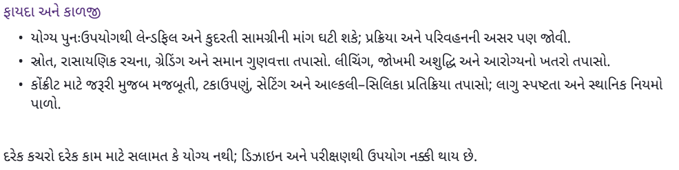
Q.5 (a) · Enlist characteristics of good paint. · OR · 3 marks
A good paint should:
• Cover well and adhere firmly to the prepared surface.
• Spread and apply easily, forming a smooth, uniform film.
• Dry in a reasonable time without excessive cracking, peeling or blistering.
• Remain durable and resist the expected weather, moisture and wear.
• Retain colour and appearance reasonably well and be economical for the intended service.
• Be suitable for the substrate and comply with applicable health and environmental requirements.
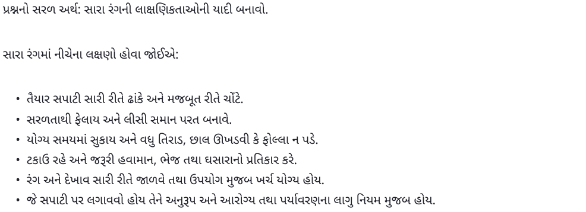
Q.5 (b) · Explain good sound insulating materials. · OR · 4 marks
Sound insulation reduces sound passing between spaces; sound absorption mainly reduces reflections and echo inside a room. They are related but not the same.
• Dense masonry or concrete: mass helps reduce airborne sound transmission when joints are sealed.
• Mineral wool or glass wool: absorbs sound in a lined cavity and improves a properly detailed double wall or ceiling.
• Resilient layers / acoustic underlay: can reduce impact-sound transmission when floors and connections are designed for it.
• Acoustic panels: porous or perforated products reduce room reverberation; by themselves they may not soundproof a wall.
Seal gaps and limit rigid sound bridges; performance depends on the whole assembly and its installation.
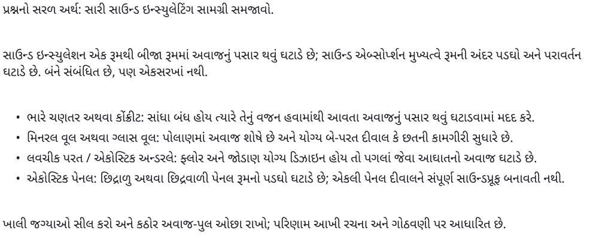
Q.5 (c) · Explain Geosynthetics. · OR · 7 marks
Geosynthetics are polymer-based products used in contact with soil, rock or other geotechnical materials. Different products serve different functions; no single product performs all functions equally.
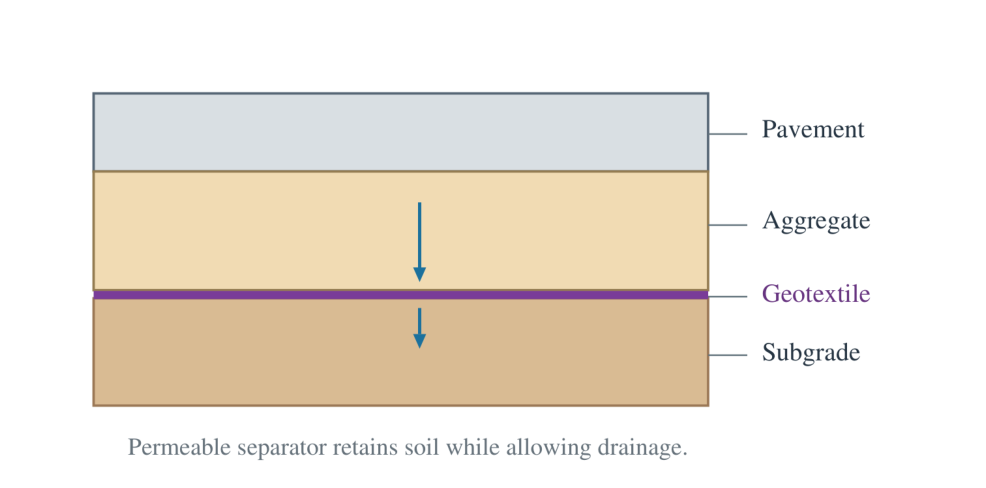
Schematic road section: a permeable geotextile separates soil and aggregate while allowing drainage.
![Q.5 (c) OR: preserved source formula, table or diagram, page 30. Extracted text context (formula notation may be incomplete): Type Main function and example Geotextile Permeable sheet for separation and filtration, e.g. between subgrade and road aggregate. Geogrid Open grid provides tensile reinforcement and interlock in reinforced soil or a road base. Geomembrane Low-permeability sheet forms a barrier, e.g. canal lining or landfill containment. Geonet / geocomposite drain Provides an in-plane drainage path; a filter layer helps prevent clogging. Geocell Three-dimensional cells confine infill and can support slopes or pavement layers.](summer-2026.assets/0053.webp)
Functions and precautions
• Separation: limits mixing of subgrade soil and aggregate. Filtration: retains soil while allowing water through an appropriately selected filter.
• Drainage: carries water along a designed path. Reinforcement: tensile resistance helps stabilise soil. Barrier: limits seepage when an impermeable membrane is specified.
• Select by soil, water flow, loads, chemical exposure, durability and applicable specifications. Protect against puncture and UV, and detail overlaps, seams and outlets correctly.
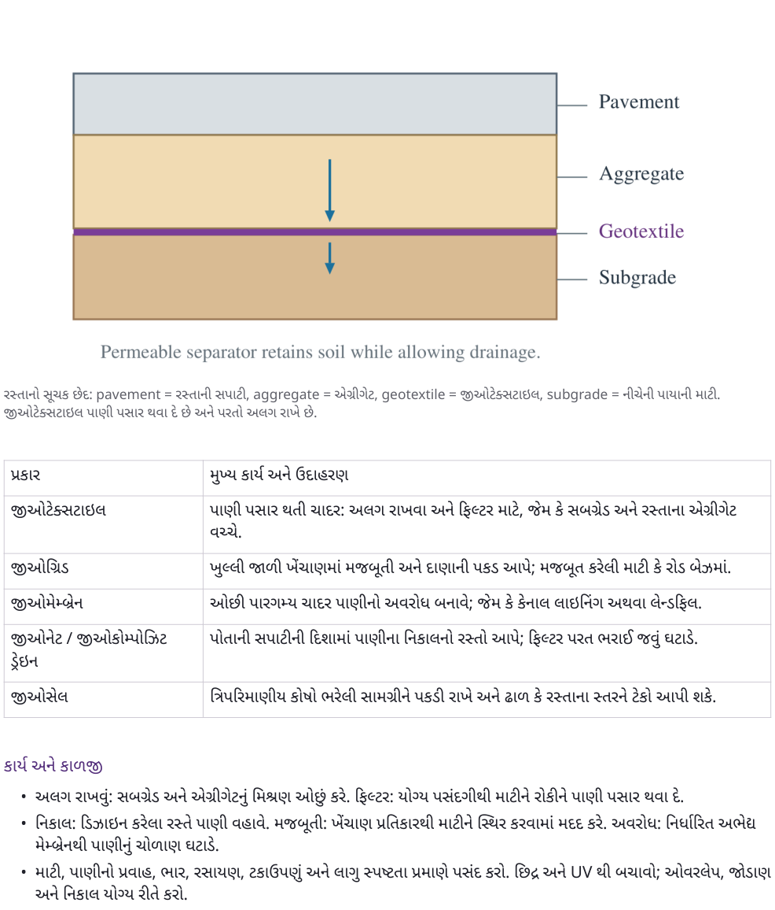
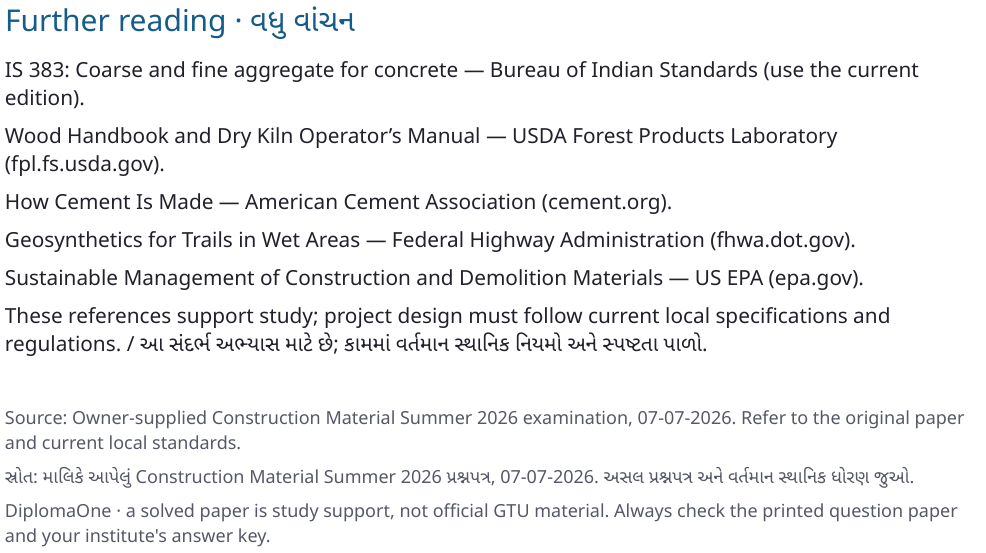